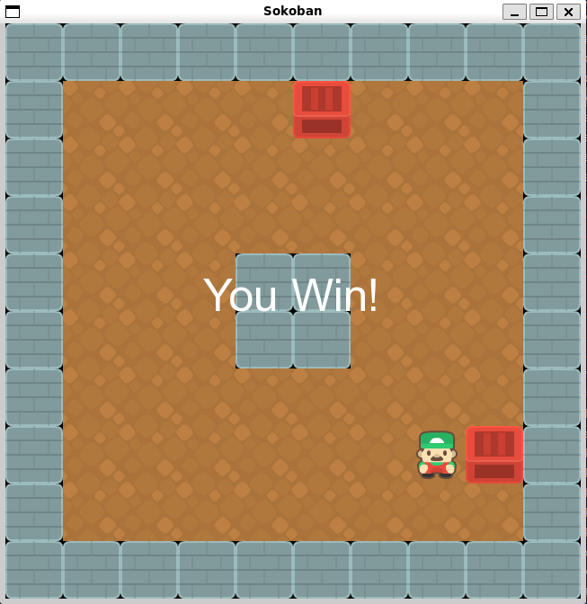
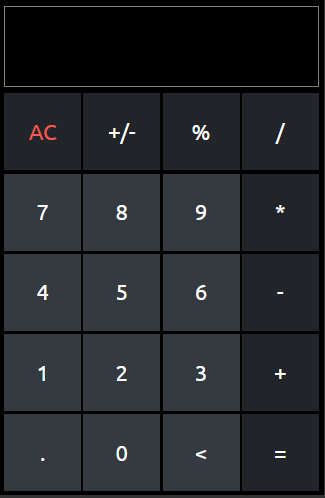
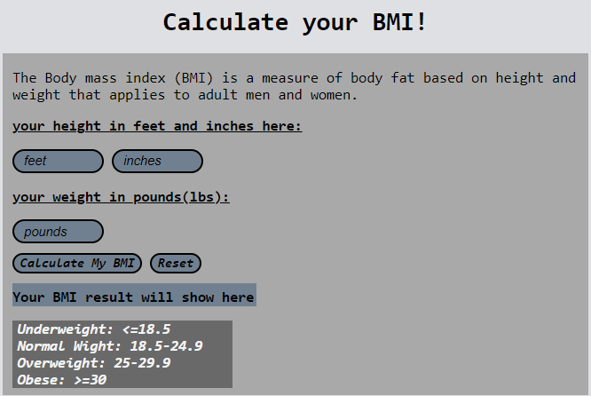

Hello, My name is Aum Patel and I'm a junior at
Umass Lowell pursuing a bachelors in Computer Science. I came to the
US in May 2019, from India with my parents after spending
16 years of my live there. It took me a while to get
used to the new environment and the people here. Just when
I thought things were getting better, the pandemic hit and
all my classes were moved online. Although it was hard to
adjust in these, conditions, it taught me to be resilient
and appreciate life more.
I used to do taekwondo
for over a decade in India and I was able to earn a black belt in
it and also earning 2 gold medals in sparring. After coming to
college I also started reading a lot of manga. Vagabond by Takehiko Inoue
is my favourite manga because of the extra ordinary art and philosophical
teachings. Over the summer, I also bought an electric guitar just to
learn a new skill and challenge myself and I try to practice whenever I
get the chance.
These are some of my favorite programs that I created so far in my time in college.
click on the image to view the source code
|  |  |  |
| Sokoban Game | Calculator | BMI Calculator |